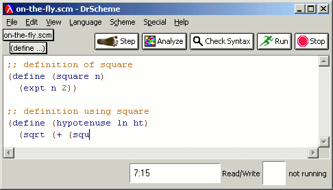
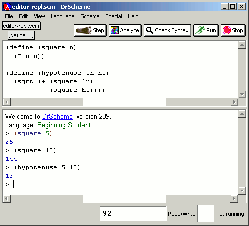
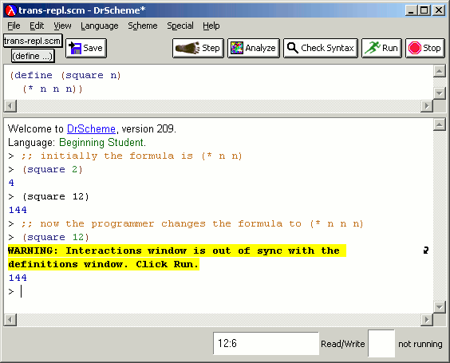

DrScheme provides an interactive environment. The upper, or Definitions, window is a full-featured, graphical editor with Emacs-like key bindings. The editor supports on-the-fly syntax coloring that respects the rules of Scheme syntax (and is therefore accurate in a way many other syntax coloring systems are not).
|  |
The lower, or Interactions, window implements a read-eval-print loop (REPL).
|  |
The Run button loads the contents of the Definitions window into the Interactions window.
The REPL in DrScheme is transparent (as described in the DrScheme paper). This avoids subtle history-induced errors and misunderstandings. DrScheme's REPL avoids these problems in two ways:
Every time the user clicks Run, DrScheme erases all internal state associated with the REPL.
DrScheme warns users when they make changes, do not click Run, and evaluate expressions in the REPL.
|  |